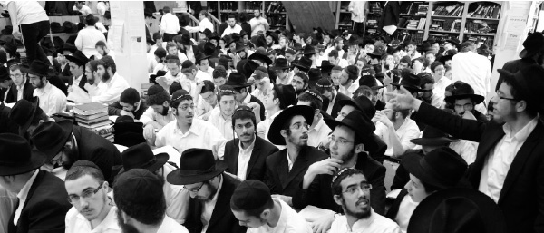

Conduct of a Yeshiva Bachur During Elul and Tishrei
A compilation from the Rebbe ’ s teachings about the benefit of staying in yeshiva and properly using the time of Elul and Tishrei .
Presented by R’ Chaim Ashkenazi a”h.

NO TIME FOR VACATION
The efforts need to be in the opposite way [of beginning the holiday intersession before Tishrei], i.e. during the Yomim Nora’im, Aseres Yemei T’shuva and Yom Kippur, [yeshiva bachurim] need to be together in the same institution where they receive guidance in Yiras Shamayim. The benefit in this and in publicizing this conduct is inestimable, both for the talmidim themselves, and even more so, for their environment.
(Igros Kodesh vol. 7, p. 347)
GOING HOME FOR TISHREI – ILLOGICAL CHOICE
That talmidim go home for the entire month of Tishrei is behavior that makes no sense and is the opposite of the intent in the guidance toward Yiras Shamayim. For if this is necessary all year round, there is no better and more auspicious time for this than during Slichos and the Yomim Nora’im, etc. If it is not possible to change this practice, at least fortify them with spiritual sustenance, both for themselves and for the places they are going to. If it is possible to at least keep back the older ones in yeshiva, at least for Rosh HaShana, Aseres Yemei T’shuva, and Yom Kippur, use this time to draw them close to the customs of Chassidim and their ways. Although you should not tamper with their customs, the good ones passed down through the generations, still, there are Chabad customs you need to tell them so they can conduct themselves in this way without affecting their Sephardic practices.
(ibid)
THE CUSTOM OF THE COUNTRY IS THE OPPOSITE OF HEALTHY INTELLECT
May you increase your effort in your holy work, despite the custom of the country which is the opposite of healthy intellect, and even the intellect of the nefesh ha’sichlis (the intellective soul), and not just the intellect of holiness, that at the end of Elul and the month of Tishrei they diminish the avoda of chinuch al taharas ha’kodesh … Of course, my intention is not to rebuke but to inspire contemplation yet again. Perhaps the time has come to improve matters, at least a bit.
(Igros Kodesh vol. 9 p. 312)
THE TALMIDIM SHOULD BE IN YESHIVA
What I’ve already written about vacation, my view is known. That some leave yeshiva for home during the days of Slichos and most of Tishrei, in all yeshivos in general and all the more so in a yeshiva where the point is learning Torah with fear of Heaven, this is obviously the complete opposite of rationality. Even, if for some reason, you must give vacation during these weeks, you must try very hard that the talmidim be in yeshiva at least most of these days. Obviously the teachers and roshei yeshiva who are needed for the benefit of the talmidim, need to be in yeshiva during these days even though it is likely that their families will not be too pleased by this. But the merit of the many depends on them. Going on at length about this is unnecessary.
(Igros Kodesh vol. 9 p. 234)
VACATION TIME
Regarding vacation during the summer, obviously it is better for the talmidim to be in yeshiva at the end of Elul and during the Aseres Yemei T’shuva than in Av, but it is also obvious that you should not give vacation in both Av and Elul, and the Aseres Yemei T’shuva.
(Igros Kodesh vol. 11 p. 135)
CHABAD AS PIONEERS
As my view has been in the past, the T’mimim, at least the older ones, should be in the yeshiva and its atmosphere at the end of Elul and during Tishrei, at least during the Aseres Yemei T’shuva. Of course, you must take into consideration the options and what is done in other yeshivos, but it is worth trying if it is only possible. In a number of things already, Chabad was the pioneer and many others followed.
(Part of a letter from 5714 to the hanhala of the yeshiva in Lud)
GOOD NEWS ABOUT THE TALMIDIM STAYING IN YESHIVA
I was pleased to receive your letters in which you write about what happened before Rosh HaShana and afterward about the talmidim staying on etc. You revived my soul with this news that brought me joy, that you are going step after step in preparing matters so they will be vessels for the coming of Moshiach Tzidkeinu. You should not falter or be fazed by it seeming to be slow, less than anticipated, because it is impossible to assess the truth of the progress. Based on what is alluded to at the end of Igeres HaT’shuva that the movement of the shadow on earth just a handbreadth is relative to (and thus also causes) the movement of the sun in the sky thousands of miles…and even more so without end etc.….
With blessings for success in your holy work. I await good news that brings me joy about Tishrei, from Anash in general and your mushpaim in particular.
(Igros Kodesh vol. 8 p. 14)
A DETAILED PLAN
Surely you are arranging a detailed plan for the days of Slichos and the upcoming month of Tishrei. I would appreciate a copy being sent here.
(Igros Kodesh vol. 11 p. 323)
“FOOD” FOR THE DAYS OF AWE AND THE DAYS OF JOY
Now too, my opinion is that you need to guide the talmidim … regarding the days of Slichos and the month of Tishrei. If that is impossible, at least some of them should be in the yeshiva and you need to provide them with “food” for these days, both for the Days of Awe as well as the Days of Joy, according to their abilities and their environment. Surely you should utilize what was explained on Shabbos Mevarchim Elul 5711 and enclosed is a second printing of that.
(Igros Kodesh vol. 9, p. 253)
SPIRITUAL SUSTENANCE TO LEARN AND TEACH
I think I already wrote you last year that if the talmidim must go home for Tishrei, they need to be provided with spiritual food for the road, i.e. instructions in behavior and easy maamarim that they can learn where they are, and especially that they should be able to speak publicly or teach publicly. But this is only if there is an absolute necessity [in their going home]; your efforts should be to accomplish the opposite.
(Igros Kodesh vol. 7, p. 347)
IT PAYS TO BE IN YESHIVA
You write about your efforts to get the talmidim for whom it is appropriate to remain in yeshiva for the month of Tishrei. Obviously, my intention was only that it be in a way that it should be voluntary. You did well in also explaining it to them in this way, but I also said that they can be certain of the benefit in this if you will be on the scene. Then you can use the time in a manner fitting to the spirit of Chabad. Because this is a matter of mesirus nefesh to them, you need to show them that it’s worth it for them … Perhaps it would be worthwhile for you to spend at least some days of Aseres Yemei T’shuva with them.
(Igros Kodesh vol. 7, p. 371)
AN INCREASE IN TORAH, MITZVOS AND AVODAS HA’T’FILLA
I gave instructions about a study schedule, and there are those who shirk this with various excuses. The Aseres Yemei T’shuva is not a time for outings. During the Aseres Yemei T’shuva one needs to increase in the study of Torah, the avoda of t’filla, and the fulfilling of mitzvos b’hiddur. The inner meaning of fulfilling mitzvos b’hiddur is also the avoda of t’filla.
Especially those who came here from various places, who “are given the stringencies of the place they came from and the stringencies of the place they come to,” especially those coming from Eretz Yisroel (as in the p’sak of the Rambam) – they need to increase in Torah study and since they need to learn more, they also need to increase their avodas ha’t’filla for this gives the strength to learn Torah. Avodas ha’t’filla is not an additional factor but something essential to Torah study.
[The Rebbe greatly demanded the learning of Nigleh and Chassidus and avodas ha’t’filla and then said:] I wouldn’t mention it just like this; rather, perhaps this will help. There are those who write a pidyon nefesh (requests for spiritual and material blessings). Aside from reading them at the Ohel, I read these pidyonos at the desk of the Rebbe, my father-in-law, where he sat and learned and davened [when the Rebbe said this, he cried]. And the pidyon nefesh is drawn down into thought, speech, and down to action. Due to lack of time, they cannot all be read. However, everything is by divine providence and the panim that are read draw down what is needed upon those that are not read. On Yom Kippur I read them again and on Hoshana Raba another time. Everyone needs to increase in learning and the avodas ha’t’filla, for by doing so, the requests that were made will be drawn down.
I asked that everyone write in his pidyon nefesh his set times for learning Nigleh and Chassidus and the avodas ha’t’filla. Since people do not think alike and do not look alike, those who wrote should be blessed and those who still did not write can still write. As I said before, I read the panim another time on Yom Kippur and Hoshana Raba, and the main thing is to actually take action.
As for the talmidei ha’yeshiva, there are different departments and there are those who came here from different places… That means, the one who received more regarding the inyan of t’filla, should influence another in this regard. And one who has more of an affinity for the learning of Nigleh, should influence others regarding learning Nigleh. And one who has more of an affinity for learning Chassidus, should influence one who does not have this as much…
I give over my shlichus so that each who can publicize and write these points that were spoken about before, should write them. There is no need to worry that someone else preceded him because it won’t hurt if several write. What one misses out on, someone else will fill in.
(Some points from the sicha of VaYeilech 5722, printed in Sichos Kodesh p. 709)
THE WAY IT WAS IN LUBAVITCH
Some of what the Rebbe said to the hanhala ruchnius of Yeshivas Tomchei T’mimim – 770 during Elul 5713:
1-Since it is the month of Elul now, and this ought to be apparent, you need to tell the talmidei ha’T’mimim how it was in Lubavitch.
2-I suggest that after Maariv (at 10:30), the talmidim should sit for a quarter of an hour and learn timely maamarim such as in Shaarei T’shuva the maamer Im Yihiye Nidachacha” or from Derech Chaim, Likkutei Torah Drushei Rosh HaShana, etc.
(A diary entry from R’ Moshe Levertov)
SURELY THEY WILL IMMEDIATELY BEGIN LEARNING
In response to being told that the talmidim had arrived from Eretz Yisroel, the Rebbe wrote (Elul 5728):
May it be in a good and auspicious time in everything and I will mention them at the tziyun for the aforementioned and for a k’siva va’chasima tova. Surely, they will immediately begin learning, Nigleh and Chassidus, with the diligence fitting for the greatness of these days…
(Igros Kodesh vol. 25 p. 179)
IN ELUL, THE MASHPIA NEEDS TO BE IN YESHIVA
During the Simchas Beis HaShoeiva farbrengen of 5710, the Rebbe said to one of the mashpiim in the yeshiva: How is it possible that a mashpia in Tomchei T’mimim leaves his work in Elul, a month of t’shuva and mercy, in order to sell esrogim, and before Pesach, to sell matza?
(Toras Yemei B’Reishis p. 79)
THE BACHURIM’S BEHAVIOR IS THE MASHPIIM’ S RESPONSIBILITY
On Erev Sukkos 5736, the Rebbe spoke to one of the mashpiim. The mashpia complained that the bachurim do not go to the mashpia. The Rebbe replied:
Woe to those mashpiim who wait for them [the bachurim] to come to them. The mashpiim need to seek out the bachurim. Bachurim come for Tishrei and wander around Kingston Avenue and the hanhala of the yeshiva does nothing. I wanted to speak about this at the 13 Tishrei farbrengen but since it was broadcast over the phone too, I refrained.
(From a t’shura that was published by Yeshivas Tomchei T’mimim in South Africa)
Beis Moshiach (staff). "Conduct of a Yeshiva Bachur During Elul and Tishrei." Beis Moshiach, no. 894 (August 27, 2013).